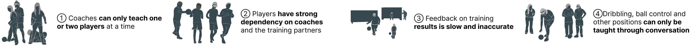

5-A Side Blind Football Auxiliary Training Equipment
Design description
Because of the denpendency on coaches and other reasons, I found that blind football players are very
inefficient in training
In order to solve this problem, I designed a set of training aids and interactive interface to help blind
athletes to better carry out daily training

Background

Football devices
Why can visually impaired players play football well?
Finding
1.In match, blind athletes' sense of tactile system and auditory system = visual system of normal athletes
2.The coach was of great help to the blind players in the match
How many players and coaches are in each team?
The following five teams have been regular winners of the World Blind Football Championship trophy in the last
five years
The table below shows the number of players and coaches on these teams
Painpoint

What can we do?
Product display
The hardware equipment includes six auxiliary products
Namely Tactile sounding goal, The training bar, Posture capture sensor, and the photo-oxidation measurement
bracelet, The bone-conduction headset eye-shade